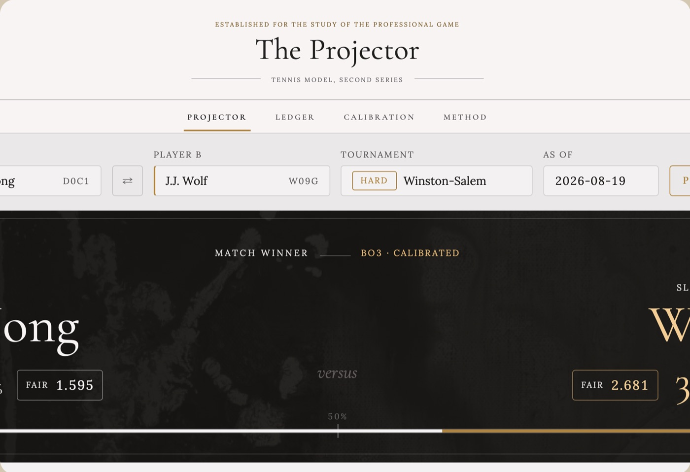
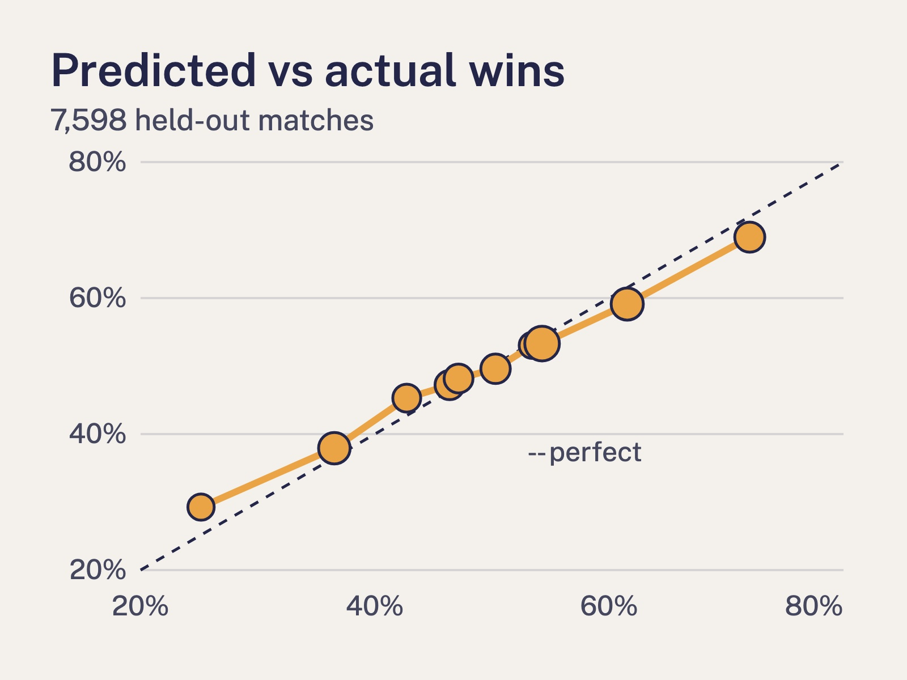
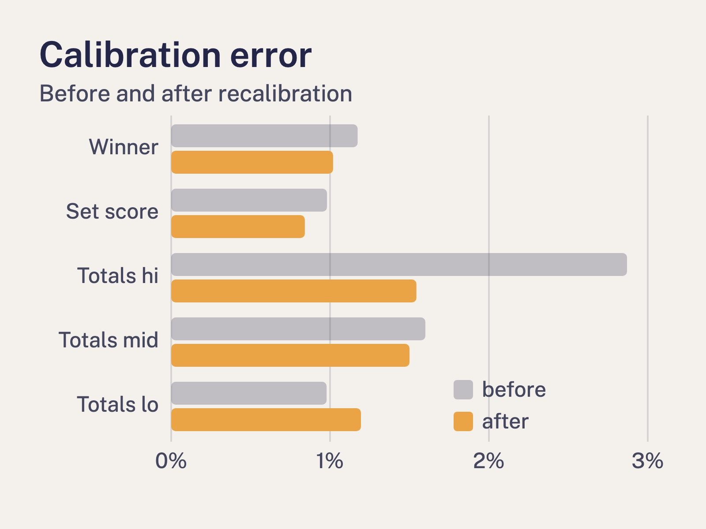

Tennis Match Projection Model
Machine Learning · Python
A model that predicts ATP match outcomes from player stats, surface and recent form. Trained on historical match data and served through a simple web app for live what-if predictions.
- Serves: tennis fans
- Difficulty: Hard



Ingredients
 Python
Python Pandas
Pandas Scikit-Learn
Scikit-Learn- Historical ATP match data
Method
- Gather historical ATP match results, then trim out walkovers and retirements so only completed matches remain.
- Season each match with player stats: ranking, surface win rate and form over the last ten matches. Load it all into Pandas and stir until the columns line up.
- Split the data by date, keeping the most recent season aside for tasting. Train a Scikit-Learn model on the older matches until its predictions stop improving.
- Taste-test against the held-back season. If the predicted favourites win about as often as the model says they should, it is ready.
- Plate it in a simple web app: pick two players and a surface, and serve up the projected winner with its odds.
Chef's Notes
Always split the matches by date, never at random. Letting future results slip into the training data makes the model look far better than it really is. Surface matters more than you would expect: a player's clay record says little about how they will go on grass.